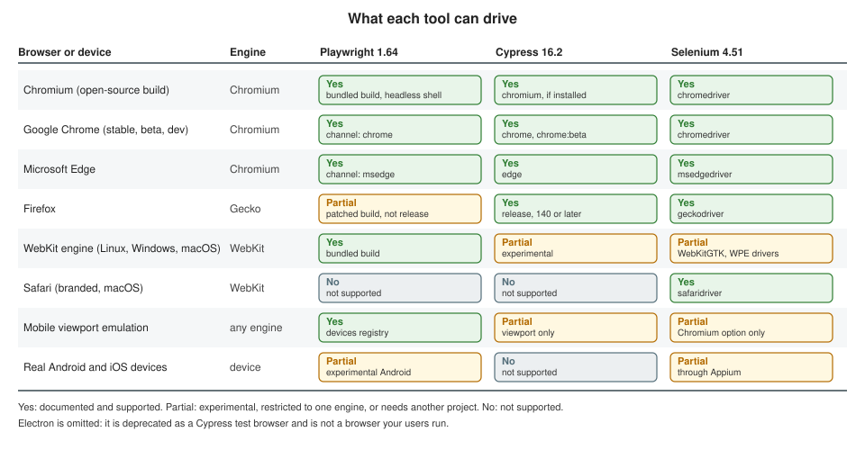

Cross-Browser Testing
|
This content was generated with the assistance of AI and should be verified against the official documentation before being relied on in production. |
A web application does not run in "the browser"; it runs in whichever of a handful of rendering engines the visitor happens to use, on a desktop, a phone or a tablet, and the three tools in this section reach those engines in very different ways. This page explains what validating several browsers means, what each tool can and cannot drive, how to set it up, how to run it in a pipeline and when to hand the job to a cloud grid. It describes Playwright 1.64, Cypress 16.2 and Selenium 4.51, and it was checked on 25 October 2026. The examples were run against the Bookshelf application: Playwright on Chromium 156, Google Chrome 155 and WebKit 27.2 on a Mac and on Firefox 157 in Docker, Cypress on Chrome 155 on the Mac and on Chrome 156, Firefox 158 and an experimental WebKit 27.2 in Docker, and Selenium 4.51 with Java and JUnit 5 and with Python and pytest on Chrome 155 locally and on a Grid with Chrome 155 and Firefox 158 nodes. Cloud grids and Safari were not run; each such example says so where it appears.
The tools themselves are introduced in Choosing a Tool and How Browser Automation Works; the details of every option below are in the tool pages (Playwright Configuration, Fixtures & Projects, Cypress Getting Started, Selenium Drivers, Browsers & Options and Selenium Grid). Wiring these runs into a pipeline in general is covered by Running in CI/CD.
Engines, branded browsers and devices
"Chrome" can mean three different things in a test plan, and so can "Safari". It helps to separate three layers.
-
An engine is the rendering and scripting core: Blink with V8 (Chromium family), Gecko with SpiderMonkey (Firefox) and WebKit with JavaScriptCore (Safari). Most behaviour differences that matter to a web application (CSS support, layout, form controls, date inputs, media codecs, scrolling, the timing of events) come from the engine.
-
A branded browser is an engine plus a product around it: Google Chrome, Microsoft Edge, Firefox, Safari. The product adds codecs, update channels, enterprise policies, extensions, sign-in, built-in password managers and its own defaults. Two browsers on the same engine can differ in all of these.
-
A device is a browser on specific hardware and an operating system: a touch screen, a notch, an on-screen keyboard, a mobile network, a different font set and a different way of scrolling. A tool can imitate a few of these properties; it cannot imitate the rest.
The figure shows which of these each tool can drive. "Partial" means experimental, limited to one engine, or available only through another project.

Three consequences follow, and the rest of the page builds on them.
-
Chromium, Chrome and Edge are one engine, three products. Testing all three catches product-level differences (a codec, a policy, a flag) but rarely engine bugs. One Chromium run covers the engine; add Chrome or Edge only where the product matters.
-
Firefox and WebKit are the other two engines, and the ones where bugs hide. A suite that only ever sees Blink will not notice a layout or API difference in Gecko or WebKit.
-
Real devices are a separate question. Emulation answers "does my layout work at 390 pixels with touch", not "does it work on a three-year-old phone with a slow CPU and a dynamic toolbar".
WebKit is not Safari
The most common mistake in cross-browser planning is to treat a green WebKit run as a green Safari run. The documentation of the three tools says why this is not so.
-
Playwright’s WebKit is a separate build. It is derived from the WebKit main branch, "often before these updates are incorporated into Apple Safari", and Playwright "doesn’t work with the branded version of Safari since it relies on patches". It runs on Linux, Windows and macOS, so the same suite can be run on a cheap Linux runner. On Linux and Windows it is the WebKit port for that platform, not the one macOS ships, so media codecs, fonts, form controls and scrolling can differ; Playwright itself recommends running WebKit on a Mac "for the closest-to-Safari experience", for example if the application plays video.
-
Cypress’s WebKit is Playwright’s WebKit. The experimental WebKit support is "built on top of the Playwright WebKit browser as a stepping stone", it is switched on with
experimentalWebKitSupport, and it needs theplaywright-webkitpackage. The same limits apply, plus the known issues listed below. -
Selenium is the only one of the three that drives the real Safari, through
safaridriver, which is installed with macOS. It runs on a Mac only, Safari has no headless mode, and automation must be enabled once withsafaridriver --enable(or the Allow Remote Automation item of the Develop menu). Safari on iOS is out of reach for Selenium; the documentation points to Appium.
In practice WebKit in Playwright is an excellent early-warning system for engine-level problems, and Safari itself, on a Mac, on an iPhone or in a cloud grid, is where the final answer comes from. Plan for both when Safari users matter.
On this host, a Safari session was attempted and failed with the message that "Allow remote automation" must be enabled in Safari’s Developer settings. That is a system setting, which was not changed, so no Safari example on this page was run.
What emulation covers and what it does not
All three tools can make one browser look like another environment. It is worth knowing exactly how far that goes.
| Property | What the tools can change | What stays the same |
|---|---|---|
Viewport and pixel ratio |
Playwright: |
The browser’s chrome (dynamic toolbars, safe areas, the virtual keyboard) is not there, and the real device’s CPU and memory are the host’s. |
Touch |
Playwright: |
Cypress has no touch emulation: on Chrome with |
User agent string |
Playwright: |
Only the string changes. The iPhone 15 descriptor of Playwright 1.64 reports |
Locale, time zone, geolocation, permissions, color scheme |
Playwright: |
The operating system’s fonts, input methods, and the text the browser’s own UI shows. Geolocation also needs a secure context (https or localhost) to exist at all. |
Network speed and offline |
Playwright: |
The real network stack: TCP behaviour, radio wake-ups, captive portals. |
Engine behaviour |
Nothing: emulation never changes the engine. |
Layout quirks, JavaScript APIs, codecs, scrolling physics, form controls: the Chromium that pretends to be an iPhone is still Blink. |
Source: Playwright: Emulation
The rule of thumb is that emulation checks your responsive design and your feature detection, and engines check browser differences. A mobile Chromium project and a desktop WebKit project together cover far more than either does alone, and a real Safari or Android device remains the only way to know about the remaining differences.
Playwright
Playwright ships its own builds of three engines and can also drive the Chrome and Edge installed on the machine. One
configuration describes all of them as projects; each project is a name plus a set of use options, and the same test
files run once per project. Test results, traces and reports are labelled with the project name.
Projects, devices and channels
The configuration used for this page defines seven projects:
import { defineConfig, devices } from '@playwright/test';
export default defineConfig({
testDir: './tests',
fullyParallel: true,
use: {
baseURL: process.env.BASE_URL ?? 'http://localhost:3961',
testIdAttribute: 'data-testid',
},
projects: [
// Playwright's own builds of the three engines
{ name: 'chromium', use: { ...devices['Desktop Chrome'] } },
{ name: 'firefox', use: { ...devices['Desktop Firefox'] } },
{ name: 'webkit', use: { ...devices['Desktop Safari'] } },
// Branded browser installed on the machine
{ name: 'chrome', use: { ...devices['Desktop Chrome'], channel: 'chrome' } },
// The full "new headless" Chromium instead of the headless shell
{ name: 'chromium-new-headless', use: { ...devices['Desktop Chrome'], channel: 'chromium' } },
// Device emulation on top of an engine
{ name: 'Mobile Chrome', use: { ...devices['Pixel 7'] } },
{ name: 'Mobile Safari', use: { ...devices['iPhone 15'] } },
],
});The pieces of that file:
-
devices[...]is a registry of 207 descriptors in Playwright 1.64 (every phone also has a landscape variant). A descriptor is a plain object withuserAgent,viewport,screen,deviceScaleFactor,isMobile,hasTouchanddefaultBrowserType. Spread it intouseand then put your own overrides after it, because later keys win (the viewport of a descriptor is replaced by aviewportplaced after the spread). ThedefaultBrowserTypeof the descriptor picks the engine, which is whydevices['iPhone 15']runs on WebKit anddevices['Pixel 7']on Chromium with nobrowserNamein the project. Descriptors assume a platform: "Desktop Chrome" reports a Windows user agent even on macOS, and the documentation suggests settinguserAgent: undefinedto keep the real one. -
channelchooses a branded browser instead of Playwright’s own build:chrome,chrome-beta,chrome-dev,chrome-canary,msedge,msedge-beta,msedge-devandmsedge-canary. The browser must be installed; Playwright does not install it unless you ask (npx playwright install chrome, which replaces the global installation). Thechromeproject above ran against the Google Chrome 155.0.8059.85 on this Mac, while thechromiumproject used Playwright’s Chromium 156.0.8078.4, which tracks ahead of the stable channel so upcoming Chrome and Edge releases are tested early. Edge is not installed on this host, so nomsedgeproject was run. -
Firefox is Playwright’s own patched build, matched to a recent Firefox stable (157.0 in Playwright 1.64). Playwright does not drive a branded Firefox, because it relies on patches.
-
The Chromium headless shell. In headless mode Playwright uses a separate, smaller Chromium build ("chromium headless shell") and a regular Chromium for headed runs. Headless Chrome and Edge, and the
chromiumchannel, use the "new headless" mode, which is the real browser and "offers more features" at the cost of a larger download and different behaviour in some cases. To keep CI images small, install only what the run needs:
# headless runs only: skip the full Chromium download
npx playwright install --with-deps --only-shell
# the opposite: new headless mode only, skip the headless shell
npx playwright install --with-deps --no-shell
# one engine, and system libraries for it
npx playwright install --with-deps webkitBoth chromium and chromium-new-headless reported version 156.0.8078.4 and passed the same tests on this host, so for
Bookshelf the choice made no difference. The documentation explains when it can: pages that depend on features of the
full browser (extensions, some media) and an application that detects HeadlessChrome.
By default npx playwright test runs every project. --project=firefox runs one, the flag can be repeated, and
default: false (new in 1.64) keeps a project out of a plain run until it is named. The projects can also carry their own
testMatch, grep, retries or timeout, which is how a mobile project runs only the smoke tests and a desktop project
runs everything; the configuration page shows that in its
Projects section.
A test that reports where it ran
The same spec ran in every project. It searches the catalogue, then prints the engine, version and device properties
that Playwright exposes as fixtures (browserName, isMobile, hasTouch) and browser.version():
import { test, expect } from '@playwright/test';
test('search works and reports the browser it ran in', async ({ page, browser, browserName, isMobile, hasTouch }, testInfo) => {
await page.goto('/books');
await page.getByTestId('search-input').fill('quiet');
await page.getByRole('button', { name: 'Search' }).click();
await expect(page.getByTestId('book-card')).toHaveCount(1);
const info = await page.evaluate(() => ({
ua: navigator.userAgent,
width: window.innerWidth,
dpr: window.devicePixelRatio,
}));
console.log(
`${testInfo.project.name}: ${browserName} ${browser.version()} mobile=${isMobile} ` +
`touch=${hasTouch} viewport=${info.width} dpr=${info.dpr} ` +
`ua=${info.ua.match(/\(([^)]*)\)/)?.[1]} headless-token=${/Headless/.test(info.ua)}`,
);
});Source: Playwright: Projects
Run on the Mac with npx playwright test --project=chromium --project=chrome --project=chromium-new-headless
--project=webkit --workers=1, the output was:
chromium: chromium 156.0.8078.4 mobile=false touch=false viewport=1280 dpr=1 ua=Windows NT 10.0; Win64; x64 headless-token=false
webkit: webkit 27.2 mobile=false touch=false viewport=1280 dpr=2 ua=Macintosh; Intel Mac OS X 10_15_7 headless-token=false
chrome: chromium 155.0.8059.85 mobile=false touch=false viewport=1280 dpr=1 ua=Windows NT 10.0; Win64; x64 headless-token=false
chromium-new-headless: chromium 156.0.8078.4 mobile=false touch=false viewport=1280 dpr=1 ua=Windows NT 10.0; Win64; x64 headless-token=false
8 passed (4.7s)Source: Playwright: Projects
Three things in that output are worth noticing. The installed Chrome is one major version behind Playwright’s Chromium.
The Windows user agent of "Desktop Chrome" shows on a Mac, as described above. And no project reports Headless in its
user agent, because Playwright removes the token; do not use it to detect which mode ran.
Firefox could not be started on this Mac (the Firefox build of Playwright fails with "Could not find profile folder"), so its project ran in the official Docker image, which has all three browsers installed:
docker run --rm --init --ipc=host \
-e BASE_URL=http://host.docker.internal:3961 \
-v "$PWD":/work -w /work \
mcr.microsoft.com/playwright:v1.64.1-noble \
npx playwright test --project=firefox --project=chromium --project=webkit --workers=1Source: Playwright: Docker
In the container the same spec reported firefox: firefox 157.0 ... ua=Windows NT 10.0; Win64; x64; rv:157.0 and passed,
next to Chromium 156.0.8078.4 and WebKit 27.2. The image is the way to get the same browser builds on every machine, and
it is how most pipelines run Playwright; the matching tag (v1.64.1-noble) must follow the installed @playwright/test
version, because every release pins its browser builds.
Emulating a device and its environment
Beyond the device descriptor, the use options in the emulation page change the environment of every context, either
for the whole project or for a block of tests with test.use(). This block sets a German locale, the Berlin time zone,
dark color scheme and a geolocation, then reads them back from the page:
test.describe('emulation', () => {
test.use({
locale: 'de-DE',
timezoneId: 'Europe/Berlin',
colorScheme: 'dark',
geolocation: { latitude: 52.52, longitude: 13.405 },
permissions: ['geolocation'],
});
test('locale, timezone and color scheme', async ({ page }) => {
await page.goto('/books');
const env = await page.evaluate(() => ({
lang: navigator.language,
tz: Intl.DateTimeFormat().resolvedOptions().timeZone,
dark: matchMedia('(prefers-color-scheme: dark)').matches,
}));
expect(env).toEqual({ lang: 'de-DE', tz: 'Europe/Berlin', dark: true });
});
test('geolocation', async ({ page }) => {
await page.goto('/books');
// The Geolocation API only exists in secure contexts: https, or http://localhost.
test.skip(!(await page.evaluate(() => window.isSecureContext)), 'not a secure context');
const lat = await page.evaluate(
() => new Promise<number>((resolve) => navigator.geolocation.getCurrentPosition((p) => resolve(p.coords.latitude))),
);
expect(lat).toBe(52.52);
});
});Source: Playwright: Emulation
All six local projects, including Mobile Chrome (Pixel 7) and Mobile Safari (iPhone 15), passed all three tests:
18 passed. In the Docker run, the geolocation test was skipped in the three engines (3 skipped, 6 passed) because
Bookshelf was reached as http://host.docker.internal:3961, which is not a secure context, and the Geolocation API does
not exist there. The first version of the test did not have that guard and hung until the test timeout, which is the
failure to expect when a page is served over plain HTTP from any host name other than localhost. The time zone of the
test runner is not changed by timezoneId; use the TZ environment variable for that.
The pattern for a cross-browser suite is therefore:
-
one project per engine you care about, named after the engine, run on every pull request or nightly;
-
one or two device projects (a phone on Chromium, a phone on WebKit) running the responsive and touch-sensitive tests, selected with
testMatchorgrep; -
branded channels only for the checks that need the real product (codecs, Chrome-only APIs, enterprise policies), since the engine is the same as in the
chromiumproject.
Cypress
Cypress runs inside the browser, so each browser needs an integration written for it. It supports the Chrome family, Firefox and, experimentally, WebKit, and it detects the browsers installed on the operating system rather than shipping them (except for Electron, see below). A browser must be installed locally or in the CI image to be used.
Choosing the browser
--browser selects it for cypress run; in cypress open the Launchpad and a drop-down choose it. The values are
chrome, chromium, chrome-for-testing, edge, firefox, webkit, electron (deprecated) and the name:channel
form (chrome:beta, chrome:canary, edge:dev, firefox:dev, firefox:nightly), or a file path to a binary Cypress
did not detect. defaultBrowser in the configuration file sets the choice when no flag is given, and "only affects the
first browser launch".
npx cypress run --browser chrome
npx cypress run --browser firefox
npx cypress run --browser edge
npx cypress run --browser webkit # needs experimentalWebKitSupport and playwright-webkit
npx cypress run --browser /usr/bin/chromiumSource: Cypress: Browser launch options
Versions matter: Cypress officially supports the latest three major versions of Chrome, Firefox and Edge, and it cannot
launch Firefox older than 140, because it automates Firefox through WebDriver BiDi, which older versions implement
incompletely. Cypress 15.0.0 through 15.18.1 set the floor at Firefox 135. Chrome is evergreen and updates itself, so the
documentation recommends Chrome for Testing (--browser chrome-for-testing) for reproducible runs: it does not
auto-update, a matching build exists for every Chrome version, it is not subject to enterprise policy and Chrome 137 and
later no longer load extensions through the Browser Launch API while Chrome for Testing and Chromium still do.
The Electron deprecation
Every Cypress release bundles an Electron-based Chromium. Electron is deprecated as a test browser since Cypress 16.0.0
and will be removed in a later major version; its Chromium trails Chrome by weeks or months and diverges from what users
run. If you pass no --browser flag and set no defaultBrowser, Cypress still falls back to Electron and warns:
│ Browser: Electron 146 (headless) (deprecated) │
Warning: The Electron browser is deprecated as a test browser and will be removed in a future version of Cypress.
Switch to Chrome or another installed browser to avoid a breaking change when you upgrade.The fix is one line, defaultBrowser: 'chrome', plus --browser in scripts, and the configuration below does both.
Configuration: defaultBrowser, filtering and WebKit
config.browsers is the list of browsers Cypress found on the machine. It is the one read-only configuration property that
setupNodeEvents may change: return a filtered or extended list and only those browsers can be selected.
import { defineConfig } from 'cypress';
export default defineConfig({
defaultBrowser: 'chrome',
experimentalWebKitSupport: true,
e2e: {
baseUrl: process.env.CYPRESS_BASE_URL ?? 'http://localhost:3961',
video: false,
supportFile: false,
setupNodeEvents(on, config) {
// Keep only the browsers this project is validated on.
const supported = ['chrome', 'firefox', 'edge', 'webkit'];
config.browsers = config.browsers.filter((b) => supported.includes(b.name));
console.log('browsers:', config.browsers.map((b) => `${b.name} ${b.majorVersion}`).join(', '));
on('task', { log(m: string) { console.log(m); return null; } });
return config;
},
},
});Source: Cypress: Configuration — Browser
With that filter Electron disappears from the list, so asking for it is an error that names what is left. This is the real
output of npx cypress run --browser electron on the Mac:
Can't run because you've entered an invalid browser name.
Browser: electron was not found on your system or is not supported by Cypress.
Cypress supports the following browsers:
- electron
- chrome
- chromium
- chrome-for-testing
- edge
- firefox
You can also use a custom browser: https://on.cypress.io/customize-browsers
Available browsers found on your system are:
- chrome
- firefoxThe Mac has Chrome 155 and a Firefox 153 that Cypress detects, and the line printed by the filter showed
browsers: chrome 155, firefox 153. A filter is also how a project stops its developers from running the suite in a
browser it does not support.
Selecting tests by browser needs no CI branching. Test configuration accepts browser with the same matcher as
Cypress.isBrowser(): a name, a family, a negation with !, or a list. The spec used for this page:
describe('Bookshelf across browsers', () => {
it('searches the catalogue and reports the browser', () => {
cy.visit('/books');
cy.get('[data-testid=search-input]').type('quiet{enter}');
cy.get('[data-testid=book-card]').should('have.length', 1);
cy.then(() => {
const { name, family, version, channel, isHeadless } = Cypress.browser;
cy.task('log', `${name} ${version} family=${family} channel=${channel} headless=${isHeadless}`);
});
});
// Runs only in Firefox
it('Firefox-specific check', { browser: 'firefox' }, () => {
cy.visit('/books');
cy.window().its('navigator.userAgent').should('include', 'Firefox');
});
// Skipped in Chrome
it('everything except Chrome', { browser: '!chrome' }, () => {
expect(Cypress.isBrowser('chrome')).to.be.false;
});
it('branches on the browser at run time', () => {
cy.visit('/books');
if (Cypress.isBrowser({ family: 'chromium' })) {
cy.log('Chromium family');
} else {
cy.log('Not Chromium');
}
});
it('emulates a phone viewport, but not touch', () => {
cy.viewport('iphone-x');
cy.visit('/books');
cy.window().its('innerWidth').should('eq', 375);
cy.window().its('navigator.maxTouchPoints').should('eq', 0);
});
});The results, per browser:
| Command | Where it ran | Result | What the log said |
|---|---|---|---|
|
Mac, Chrome 155.0.8059.85 |
3 passing, 2 pending |
|
|
Docker |
5 passing |
|
|
the same Docker image, Chrome 156 |
3 passing, 2 pending |
|
|
Docker, Playwright’s Ubuntu 24.04 image, WebKit 27.2 |
4 passing, 1 pending |
|
The two pending tests under Chrome are the Firefox-only and the not-Chrome tests, skipped by their browser option
("skipped due to browser" in the output). Firefox ran all five tests: the Firefox-only one and the not-Chrome one both
apply to it. The iphone-x viewport changed the width to 375 pixels in every browser, and
navigator.maxTouchPoints stayed 0, which is the limit of Cypress’s emulation: the viewport changes, touch input and the
user agent do not (there is a userAgent configuration option for the string).
Firefox ran in Docker because the Firefox on this Mac did not connect: cypress run --browser firefox reported "Timed
out waiting for the browser to connect" until it was stopped. Cypress detected that Firefox and listed it; it is the
same Mac-specific problem that stops Playwright’s Firefox and Selenium’s geckodriver, and the same image-based run works.
Experimental WebKit
WebKit support is opt-in and experimental:
-
Set
experimentalWebKitSupport: true. -
Install the
playwright-webkitpackage (npm install playwright-webkit --save-dev), which downloads the WebKit build. -
On Linux, install the system libraries:
npx playwright install-deps webkit. -
Run
cypress run --browser webkit(--recordalso works in CI).
Its known issues in 16.2: cy.origin() is not supported, Test Replay is not supported, the forceNetworkError option of
cy.intercept() is disabled, some cy.type() events are missing properties (data on textInput, inputType on
beforeinput), the up and down arrows on input[type=number] do not round to the step, and stack traces can miss names
and locations. Videos with experimentalSingleTabRunMode only record the first spec. An application that signs in through
another origin cannot be tested in WebKit with Cypress today.
The run in the table above needed some care. The first attempt on the Mac printed Timed out waiting for the browser to connect and did not finish, so it is not claimed to work on macOS 27 here. A run in the cypress/included image failed
because the WebKit build of Playwright is made for Ubuntu 24.04 and that image is Debian (the build stopped on a missing
libicudata.so.74). The passing run used Playwright’s mcr.microsoft.com/playwright:v1.64.1-noble image (Ubuntu 24.04,
WebKit 27.2 already installed), the Cypress binary from the cypress/included image copied into a cache folder mounted
into the container, a few apt libraries for Electron and Xvfb, and the same project files:
# inside the Playwright Ubuntu 24.04 container, with the Cypress 16.2.0 binary in /cycache
apt-get update && apt-get install -y xvfb libgbm1 libgtk-3-0 libnotify4 libnss3 libxss1 libasound2t64 libxtst6
export CYPRESS_CACHE_FOLDER=/cycache/Cypress
npx cypress run --browser webkitA project that wants Cypress WebKit in CI should build one image that has Cypress, the system libraries and the
playwright-webkit browsers together, rather than assemble them on each run; the Cypress cypress/factory image builder
exists for that.
Selenium
Selenium treats each browser as a driver plus options. The test code builds the options object of the browser it wants, and Selenium Manager (bundled with every binding since 4.6) downloads the matching driver, or the Grid does that on the node that runs the session. The same test body can then run on any of them; only the creation of the driver differs.
Options per browser
| Browser | Java | Python | Notes |
|---|---|---|---|
Chrome |
|
|
Headless is |
Edge |
|
|
Same Chromium flags; needs the installed Edge and msedgedriver. Not installed on this host. |
Firefox |
|
|
Headless is |
Safari |
|
|
macOS only, no headless mode; |
Source: Selenium: Supported browsers
A test that supports several browsers needs a small factory that returns the right options. The JUnit 5 class below keeps
the browser as a test parameter, builds local Chrome when no Grid is configured and a RemoteWebDriver when one is:
class CrossBrowserTest {
// Empty: run Chrome locally. Set -Dgrid=http://localhost:4444 to use a Grid.
static final String GRID = System.getProperty("grid", "");
static final String APP = System.getProperty("app", "http://localhost:3961");
WebDriver driver;
@AfterEach
void quit() {
if (driver != null) driver.quit();
}
static Stream<Capabilities> browsers() {
ChromeOptions chrome = new ChromeOptions();
chrome.addArguments("--headless=new");
FirefoxOptions firefox = new FirefoxOptions();
firefox.addArguments("-headless");
return GRID.isEmpty() ? Stream.of(chrome) : Stream.of(chrome, firefox);
}
WebDriver start(Capabilities options) throws Exception {
if (GRID.isEmpty()) {
return new ChromeDriver((ChromeOptions) options);
}
return RemoteWebDriver.builder().address(new URI(GRID)).oneOf(options).build();
}
@ParameterizedTest(name = "[{index}] {0}")
@MethodSource("browsers")
void searchWorksInEveryBrowser(Capabilities options) throws Exception {
driver = start(options);
driver.get(APP + "/books");
driver.findElement(By.cssSelector("[data-testid=search-input]")).sendKeys("quiet");
driver.findElement(By.cssSelector("[data-testid=search-submit]")).click();
new WebDriverWait(driver, Duration.ofSeconds(5))
.until(ExpectedConditions.textToBePresentInElementLocated(
By.cssSelector("[data-testid=result-count]"), "1 book found"));
Capabilities used = ((RemoteWebDriver) driver).getCapabilities();
System.out.println(used.getBrowserName() + " " + used.getBrowserVersion()
+ " on " + used.getPlatformName());
assertEquals(options.getBrowserName(), used.getBrowserName());
}
}Source: Selenium: Driver options
mvn test ran one case (local Chrome 155.0.8059.85 on mac), and with -Dgrid=http://localhost:39614
-Dapp=http://host.docker.internal:3961 against the Grid described below it ran two:
chrome 155.0.8059.79 on linux
firefox 158.0 on linux
[INFO] Tests run: 2, Failures: 0, Errors: 0, Skipped: 0, Time elapsed: 3.476 s -- in demo.CrossBrowserTestThe Python equivalent keeps the options in a dictionary and uses pytest’s parametrization:
import os
import pytest
from selenium import webdriver
GRID = os.environ.get("GRID_URL", "") # empty: run Chrome locally
APP = os.environ.get("BASE_URL", "http://localhost:3961")
def chrome_options():
options = webdriver.ChromeOptions()
options.add_argument("--headless=new")
return options
def firefox_options():
options = webdriver.FirefoxOptions()
options.add_argument("-headless")
return options
BROWSERS = {"chrome": chrome_options, "firefox": firefox_options}
def pytest_generate_tests(metafunc):
if "browser" in metafunc.fixturenames:
names = list(BROWSERS) if GRID else ["chrome"]
metafunc.parametrize("browser", names)
@pytest.fixture
def driver(browser):
options = BROWSERS[browser]()
if GRID:
d = webdriver.Remote(command_executor=GRID, options=options)
else:
d = webdriver.Chrome(options=options)
yield d
d.quit()Source: Selenium: Driver options
from selenium.webdriver.common.by import By
from selenium.webdriver.support import expected_conditions as EC
from selenium.webdriver.support.ui import WebDriverWait
from conftest import APP
def test_search_works_in_every_browser(driver, browser):
driver.get(f"{APP}/books")
driver.find_element(By.CSS_SELECTOR, "[data-testid=search-input]").send_keys("quiet")
driver.find_element(By.CSS_SELECTOR, "[data-testid=search-submit]").click()
WebDriverWait(driver, 5).until(
EC.text_to_be_present_in_element((By.CSS_SELECTOR, "[data-testid=result-count]"), "1 book found")
)
caps = driver.capabilities
print(caps["browserName"], caps["browserVersion"], caps["platformName"])
assert caps["browserName"] == browserSource: Selenium: Driver options
Locally it printed chrome 155.0.8059.85 mac (1 passed). With GRID_URL=http://localhost:39614 BASE_URL=http://host.docker.internal:3961 it printed chrome 155.0.8059.79 linux and firefox 158.0 linux (2 passed in
2.54 s). The tests describe each browser with an Options class, which is the only supported way to do it in Selenium 4.
The code for Edge and Safari is the same with EdgeOptions or SafariOptions, and was not run (Edge is not installed
here, and Safari automation is disabled, see above). The Selenium documentation also lists WebKitGTKOptions and
WPEWebKitOptions for the Linux WebKit ports; those drive a different build from the one macOS ships and are not a
substitute for Safari.
A Grid with several node types
A Grid separates the code that asks for a browser from the machines that provide it. The test requests capabilities
(browserName, optionally browserVersion and platformName), the Distributor finds a slot whose stereotype matches,
and the session runs on that Node. The "node types" of a cross-browser Grid are therefore Nodes that differ in what they
advertise: a Chrome node, a Firefox node, an Edge node, a Windows node (for Edge or IE mode), a Mac node (for Safari)
and Nodes with different browser versions. The architecture and the three roles (Standalone, Hub and Node, Distributed) are
described in Selenium Grid; this Compose file builds the smallest
cross-browser Grid, a Hub with a Chrome Node and a Firefox Node:
services:
selenium-hub:
image: selenium/hub:4.51.0
ports: ["${GRID_PORT:-4444}:4444"]
chrome:
image: selenium/node-chrome:4.51.0
shm_size: 2gb
depends_on: [selenium-hub]
extra_hosts: ["host.docker.internal:host-gateway"]
environment:
- SE_EVENT_BUS_HOST=selenium-hub
- SE_EVENT_BUS_PUBLISH_PORT=4442
- SE_EVENT_BUS_SUBSCRIBE_PORT=4443
- SE_NODE_MAX_SESSIONS=2
firefox:
image: selenium/node-firefox:4.51.0
shm_size: 2gb
depends_on: [selenium-hub]
extra_hosts: ["host.docker.internal:host-gateway"]
environment:
- SE_EVENT_BUS_HOST=selenium-hub
- SE_EVENT_BUS_PUBLISH_PORT=4442
- SE_EVENT_BUS_SUBSCRIBE_PORT=4443
- SE_NODE_MAX_SESSIONS=2Source: docker-selenium
docker compose up -d --wait starts it and returns when the three containers are healthy. The status endpoint shows what
each node advertises:
$ curl -s localhost:39614/status | jq -r '.value.nodes[] | "\(.osInfo.name) maxSessions=\(.maxSessions) slots=\(.slots|length) \(.slots[0].stereotype.browserName) \(.slots[0].stereotype.browserVersion)"'
Linux maxSessions=2 slots=2 chrome 155.0
Linux maxSessions=2 slots=2 firefox 158.0(The host port was 39614 in this run through the GRID_PORT variable; 4444 is the default.) The extra_hosts entry makes
host.docker.internal resolve on a Linux Docker host such as a CI runner, where it does not exist by default. Docker
images exist for Chrome, Firefox and Edge Nodes (Edge on amd64 only); Safari and Internet Explorer need a Node on a Mac or
a Windows machine started from the Selenium Server jar, and a Dynamic Grid can start a container per session. Every node
that registers is a possible target of the same parameterised test, so adding a browser to a Grid means adding a node, not
changing the tests.
Cloud grids
When the browsers you need do not fit on your own machines (Safari on macOS, many Chrome and Firefox versions, Windows with Edge, real iPhones and Android phones), a cloud grid runs them for you. They differ in how they connect, and they usually lag the newest tool versions, so check support before upgrading a tool.
None of the cloud examples below was run: each needs an account, a username and an access key or, for Azure, an Azure subscription, and no such account was available for this page. They follow each vendor’s documentation, read from environment variables rather than literals.
| Service | How tests connect | What the documentation says on 25 October 2026 |
|---|---|---|
BrowserStack Automate |
The BrowserStack SDK reads |
More than 100 browser and OS combinations for Playwright, 3000 or more browser, OS and device combinations in total, with real devices; credentials in the YAML or in environment variables. |
Sauce Labs |
Selenium through a Remote WebDriver URL of a data center with |
Playwright 1.62.1 and Cypress 15.21.1 are the newest listed versions, with Chromium, Chrome, Firefox and WebKit for Playwright and Chrome, Firefox, Edge and experimental WebKit for Cypress, on Windows 10 and 11 and macOS 14 to 26 (macOS 14 and later need a subscription). |
TestMu AI (formerly LambdaTest) |
Selenium through a hub URL with |
3000 or more browsers and operating systems; Playwright browser names |
Playwright Workspaces (Azure App Testing) |
The |
Replaces Microsoft Playwright Testing, which was retired on 8 March 2026. Authentication is Microsoft Entra ID, or access tokens (disabled by default); billing is by test minutes. |
BrowserStack. The SDK needs the platforms to test on; the same file serves the three tools and runs one parallel thread per platform (the keys follow the structure of the vendor’s example; take the exact values for your platforms from the vendor’s capability generator, because the ones below are illustrative):
# browserstack.yml (credentials come from BROWSERSTACK_USERNAME and BROWSERSTACK_ACCESS_KEY)
platforms:
- os: Windows
osVersion: 11
browserName: chrome
browserVersion: latest
- os: OS X
osVersion: Sequoia
browserName: playwright-webkit
browserVersion: latest
parallelsPerPlatform: 1Sauce Labs. A Selenium session on a Sauce Labs data center, using the options classes and the sauce:options
capability:
ChromeOptions options = new ChromeOptions();
options.setPlatformName("Windows 11");
options.setBrowserVersion("latest");
Map<String, Object> sauce = new HashMap<>();
sauce.put("username", System.getenv("SAUCE_USERNAME"));
sauce.put("accessKey", System.getenv("SAUCE_ACCESS_KEY"));
sauce.put("build", "bookshelf-cross-browser");
sauce.put("name", "search works");
options.setCapability("sauce:options", sauce);
WebDriver driver = RemoteWebDriver.builder()
.address(new URI("https://ondemand.us-west-1.saucelabs.com/wd/hub"))
.oneOf(options)
.build();TestMu AI. Playwright connects with the capabilities URL-encoded into the WebSocket address; the credentials are read
from LT_USERNAME and LT_ACCESS_KEY:
import { chromium } from 'playwright';
const capabilities = {
browserName: 'pw-webkit', // Chrome, MicrosoftEdge, pw-chromium, pw-firefox or pw-webkit
browserVersion: 'latest',
'LT:Options': {
platform: 'Windows 10',
build: 'Bookshelf cross-browser',
name: 'search works',
user: process.env.LT_USERNAME,
accessKey: process.env.LT_ACCESS_KEY,
network: true,
video: true,
console: true,
},
};
const browser = await chromium.connect({
wsEndpoint: `wss://cdp.lambdatest.com/playwright?capabilities=${encodeURIComponent(JSON.stringify(capabilities))}`,
});
const page = await browser.newPage();Source: TestMu AI: Playwright testing
Playwright Workspaces. The service configuration is generated once and then passed to the CLI; the region endpoint of the
workspace goes in PLAYWRIGHT_SERVICE_URL, and az login signs the client in with Microsoft Entra ID:
npm init @azure/playwright@latest
az login
npx playwright test --config=playwright.service.config.tsPractical points that apply to every cloud grid:
-
Reachability. The browser runs in the vendor’s network, so the application must be reachable from it: a public preview URL, or the vendor’s tunnel product for an application behind a firewall. The
host.docker.internaltrick of this page’s local Grid does not apply. -
Version lag. Sauce Labs lists Playwright 1.62.1 and Cypress 15.21.1 while the current versions are 1.64 and 16.2, and Playwright connects to a remote browser version it supports; match the tool version to what the service lists.
-
Secrets. Credentials belong in the CI secret store and in environment variables, never in the repository.
-
Cost and parallelism. Services bill per parallel session or per minute; run the cloud matrix on a schedule or on release branches, and the cheap engine matrix on every pull request.
A matrix run
A cross-browser strategy is a decision about what runs where and when, not only about which browsers exist. A common shape is a fast tier on one engine for every commit, an engine matrix when that tier is green, and a nightly cloud run for the combinations that cannot be had locally.
The figure’s tiers map to settings in each tool: Playwright projects and --project, Cypress --browser, --spec and the
browser test option, Selenium’s Grid nodes, and tags or grep to pick the tests. Choose the subset deliberately: the
documentation of Cypress suggests running every test in one browser and a smoke subset, or a nightly schedule, in the
others, and a mobile project often needs only the tests that depend on layout.
GitHub Actions matrices
Each workflow below uses a matrix so that every browser is a separate job, with fail-fast: false so that one browser
failing does not hide the result of another. The job names carry the browser, so a failed check says which one. The action
versions are the latest major tags on 25 October 2026 (checkout v7, setup-node v7, setup-java v6, upload-artifact v7 and the
Cypress action v7).
Playwright. One job per project, and a macOS job for WebKit as well as a Linux one:
name: Playwright cross-browser
on: [push, pull_request]
jobs:
e2e:
strategy:
fail-fast: false
matrix:
include:
- { os: ubuntu-latest, project: chromium }
- { os: ubuntu-latest, project: firefox }
- { os: ubuntu-latest, project: webkit }
- { os: ubuntu-latest, project: Mobile Chrome, install: chromium }
- { os: macos-latest, project: webkit }
name: ${{ matrix.project }} on ${{ matrix.os }}
runs-on: ${{ matrix.os }}
steps:
- uses: actions/checkout@v7
- uses: actions/setup-node@v7
with:
node-version: 24
cache: npm
- run: npm ci
- run: npx playwright install --with-deps ${{ matrix.install || matrix.project }}
- run: npx playwright test --project="${{ matrix.project }}"
- uses: actions/upload-artifact@v7
if: ${{ !cancelled() }}
with:
name: report-${{ matrix.os }}-${{ matrix.project }}
path: playwright-report/
retention-days: 7Source: Playwright: Setting up CI
Cypress. The official action installs dependencies, starts the application, waits for it and runs the browser given in
browser; Chrome, Firefox and Edge are on the GitHub-hosted Ubuntu runners:
name: Cypress cross-browser
on: [push, pull_request]
jobs:
e2e:
strategy:
fail-fast: false
matrix:
browser: [chrome, firefox, edge]
name: ${{ matrix.browser }}
runs-on: ubuntu-latest
steps:
- uses: actions/checkout@v7
- uses: cypress-io/github-action@v7
with:
browser: ${{ matrix.browser }}
start: npm start
wait-on: http://localhost:3000
wait-on-timeout: 60
- uses: actions/upload-artifact@v7
if: failure()
with:
name: screenshots-${{ matrix.browser }}
path: cypress/screenshots
if-no-files-found: ignoreSource: Cypress: GitHub Actions
Selenium. The matrix is the Grid: one job starts the Compose file above and runs the parameterised test, which fans out
to one session per browser. A second matrix dimension (for example binding: [java, python]) would repeat it for the other
language:
name: Selenium cross-browser
on: [push, pull_request]
jobs:
e2e:
runs-on: ubuntu-latest
steps:
- uses: actions/checkout@v7
- uses: actions/setup-node@v7
with:
node-version: 24
- uses: actions/setup-java@v6
with:
distribution: temurin
java-version: 17
cache: maven
- run: npm ci
- run: npm start &
- run: curl --silent --output /dev/null --retry 20 --retry-connrefused --retry-delay 1 http://localhost:3000/
- name: Start a Grid with a Chrome node and a Firefox node
run: docker compose -f grid/compose.yml up -d --wait
- run: mvn --batch-mode test -Dgrid=http://localhost:4444 -Dapp=http://host.docker.internal:3000
- name: Stop the Grid
if: always()
run: docker compose -f grid/compose.yml down -vThe three workflows could not be executed by GitHub on this machine, because no Actions runner or the act tool was
available. Instead the commands in the steps were run: the three Playwright projects with their browser, Cypress with
Chrome and Firefox (and WebKit in the container), the Compose file with up -d --wait, the curl retry against the
application, and mvn test with -Dgrid and -Dapp, all as shown above. The YAML files parse, the actions/* and
cypress-io/github-action steps and the ${{ }} expressions were not run, and neither were playwright install --with-deps
on Linux, the macOS and Edge runners, or the Cypress action. Treat them as templates and run them once in a branch.
Pitfalls
-
Treating "WebKit passes" as "Safari passes". See the section above. Keep a Safari check on a Mac or in a cloud grid when Safari users matter, and record what the WebKit project cannot see.
-
Running everything everywhere. Four browsers multiply run time and flakiness by four. Run the full suite in one browser and the tests that depend on the engine in the others (Playwright
grep, Cypressbrowserand--spec). -
Version drift in branded browsers. A
chromechannel project or Cypress--browser chromefollows whatever version the runner has installed. Pin Chrome for Testing, or use a container image, when a run must be reproducible. -
Cypress Electron by accident. A missing
--browseranddefaultBrowserstill run Electron today. Set both. -
Firefox 139 or older with Cypress. It fails: Cypress needs Firefox 140 or later.
-
Playwright browser and package versions out of step. Each release pins browser builds. Run
npx playwright installafter every upgrade and keep the Docker image tag in step with the package. -
Insecure contexts. Geolocation, clipboard, service workers and other APIs exist only on https or
localhost; a test that reaches the app through another host name over HTTP can hang or behave differently from production. -
Emulated touch is not touch everywhere. Cypress’s
cy.viewport()changes the size only; Playwright’shasTouchenables touch events, and a gesture library can still behave differently on a real device. -
Shared state across parallel browsers. Projects run in parallel and share the application’s data. Give each project its own data, or run the matrix in one worker where the example application resets state (see Flaky Tests & Reliability).
-
Visual baselines per browser. Screenshots differ between engines and operating systems; keep a baseline per project and generate it in the same environment (see Visual Regression Testing).
What changed recently
-
Playwright 1.64 (2026) bundles Chromium 156.0.8078.4, Firefox 157.0 and WebKit 27.2, is tested with Chrome and Edge 155, and adds
default: falsefor projects andfullConfig.filteredProjects. Node 22, 24 or 26 is required. -
Cypress 16.0.0 (1 September 2026) deprecated the Electron browser as a test browser and moved Chrome-family networking to a native implementation; 16.2.0 (13 October 2026) is the current release. Firefox support requires Firefox 140 or later (it was 135 from Cypress 15.0.0 to 15.18.1).
-
Cypress WebKit remains experimental in 16.2 and is built on Playwright’s WebKit.
-
Selenium 4.51.0 (9 October 2026) is the current release; Grid images are mirrored to GHCR, and the node images used here carry Chrome 155 and Firefox 158.
-
Microsoft Playwright Testing was retired on 8 March 2026; its successor is Playwright Workspaces in Azure App Testing.
-
LambdaTest is now TestMu AI; the documentation of both names serves the same pages, and the browser names for Playwright are
pw-chromium,pw-firefoxandpw-webkit.
See What’s Changed and Upgrading for the version history of the three tools and the cheat sheet for the commands in one page.